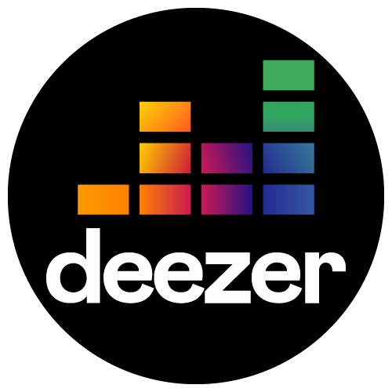
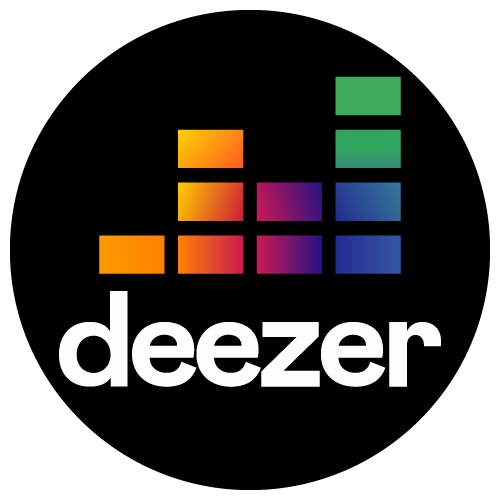

Feu (2015)
Cyborg (2016)
Les étoiles vagabondes/expensions (2019)
Nekfeu de son vrai nom Ken Samaras, né le 3 avril 1990 à La Trinité, dans les Alpes-Maritimes, est un rappeur (auteur-interprète) et acteur français. Il est aussi, dans une moindre mesure, réalisateur et directeur de photographie. Membre du groupe S-Crew et 1995, il appartient au collectif L'Entourage et a également fait partie du collectif 5 Majeur. Sorti en 2015, son premier album solo, Feu, bénéficie d'une couverture médiatique importante ; pour cet album, il remporte en 2016 la Victoire de l'album de musiques urbaines. Son deuxième album, intitulé Cyborg, sort en 2016, et son troisième, Les Étoiles vagabondes, en 2019. Au cours de sa carrière, il a vendu plus de 1,5 million d'albums et détient trois disques de diamant pour ses trois albums studios
Victoire de la musique en 2016 & 2020
César en 2018
S-Crew
L'Entourage
1995
5 majeur
À la base le groupe s’est formé en 2001 à Paris composé d'une dizaine d'amis. Au fur et à mesure, les plus passionnés restent et un noyau dur se crée, il est principalement composé de Nekfeu (également membre du groupe 19951), des deux frères Framal et Mekra. À cette même époque, en 2008-2009, 2zer Washington commence à les côtoyer, ils deviennent amis et est invité en featuring avec eux sur leur premier projet « Même signature ». En 2010, à la suite de nombreuses collaborations, 2zer est invité à rejoindre officiellement l'équipe. Ils sont également accompagnés des beatmakers : DJ Elite (sur Seine Zoo et en tournée) et, plus récemment Hugz Hefner (sur Destins Liés). Ils font tous partie du collectif L'Entourage. Le S-Crew publie sa première mixtape, Même signature, en février 2010. Il enchaîne ensuite avec Métamorphose en 2012. En 2013, le S-Crew annonce un premier album studio intitulé Seine Zoo. La liste des titres est dévoilée en août 2013. Seine Zoo est publié le 30 septembre 2013. Après sa sortie, le groupe est interviewé, et se produit en live pour plusieurs médias nationaux dont 20 minutes, Canal+ (Le Before du Grand Journal) ou encore Skyrock. Le groupe part en tournée en France pour le Seine Zoo Tour (2013-2014) avec une date à La Cigale de Paris en mars 2014 et au Bataclan en octobre 2014. Après un projet avec le collectif L'Entourage en 2014 (album Jeunes Entrepreneurs) et un projet solo de Nekfeu en 2015 (album Feu), le $-Crew redevient plus actif (les différents membres sortant toujours quelques freestyles ou sons sur YouTube et étant toujours en tournée) en 2016 et signe le générique français du film Creed : L'Héritage de Rocky Balboa. Le second album studio du $-Crew intitulé Destins liés sort le 17 juin 2016, et se classe à la première place du top album français. Le $-Crew a participé en 2017 à la 4ᵉ édition d'AbbéRoad14, concert caritatif de la Fondation Abbé Pierre, qui cette année était une carte blanche à Nekfeu. Après une pause de six ans, le S-Crew annonce son retour avec un nouvel album intitulé SZR 2001 prévu pour 10 juin 2022. Cet album contient 16 titres dont des featurings avec Alpha Wann, PLK & Doums.
L'Entourage est un collectif de hip-hop français, originaire de Paris. Formé en 2008, il est composé de onze rappeurs : Deen Burbigo, Doums, Eff Gee, Fonky Flav', Mekra, Nekfeu, Alpha Wann, Framal, Jazzy Bazz et 2zer. Le collectif compte aussi d'autres membres qui ne rappent pas comme Candy Cotton, Abou, etc. Ils comptent un album studio, Jeunes Entrepreneurs, publié en 2014. Le collectif est formé en 2008. Plusieurs membres proviennent des groupes 1995 (Fonky Flav' et Alpha Wann) et S-Crew (Framal, Mekra, 2zer), seul Nekfeu appartient aux deux. Le collectif se fait connaître dans le milieu du rap en participant aux battles Rap Contenders en 2011. Deux ans après la formation de l'Entourage, Guizmo quitte le projet. Le premier album studio du collectif, Jeunes entrepreneurs, publié en 2014, atteint la deuxième place du hit-parade français6. Le collectif effectue une tournée en soutien à l'album, faisant notamment un concert à l'Olympia le 14 juin 2014.
1995 (prononcé « Un Neuf Neuf Cinq ») était un groupe de hip-hop français, originaire du sud de Paris. Il est fondé en 2008 et se composait des rappeurs Alpha Wann, Darryl Zeuja, Nekfeu, Fonky Flav' et Sneazzy, ainsi que du producteur Hologram Lo'. Après La Source en 2011, 1995 publie son deuxième EP, La Suite, en 2012. Il est accompagné de trois singles coupés : La Suite, Bienvenue et Renégats. Le groupe publie la même année son unique album, Paris Sud Minute, le 31 décembre 2012. Le groupe ne se montre plus actif dans les années qui suivent, avant que sa fin ne soit officiellement annoncée en 2019.
5 Majeur est un collectif de rap réunissant le groupe Fixpen Sill (Vidji et Keroué), Hors II portée (Hunam et Heskis) et Nekfeu (rappeur membre de l'Entourage, S-Crew, 1995). Le premier lien s'établit entre Kéroué et Heskis pendant les Transmusicales. La première vraie connexion se fait le jour où Fixpen Sill, en première partie de La Rumeur, invite Heskis et Nekfeu à monter sur scène. Un peu plus tard, les 5 artistes se retrouvent pour réaliser un projet commun. Après 3 jours de travail intensif, le premier projet 5 Majeur est né. Leur premier EP sort en 2011, avec notamment Jour de pluie et On pèse. Ils reviennent le 27 mai 2013 avec l'album Variations qui contient 13 morceaux, dont Dérapage contrôlé, Gère tes affaires ou encore Les dés sont jetés. Le son Gère tes affaires connaît une particulière popularité grâce à une punchline de Nekfeu : "Ceux qui respectent le règlement ne le respectent pas correctement", utilisée en introduction des vidéos du célèbre Youtubeur spécialisé dans le rap Le Règlement.